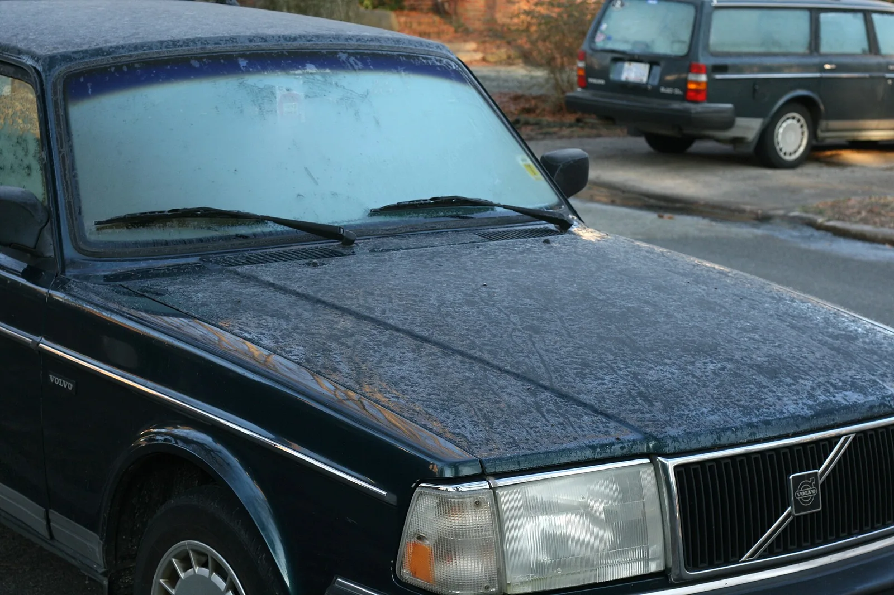
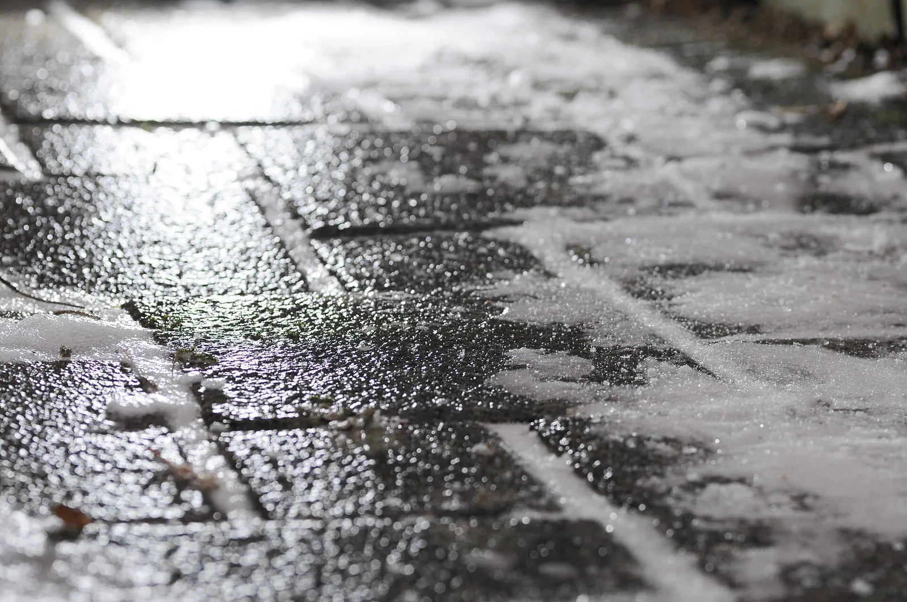

▲ 결빙된 노면. 얇게 언 얼음은 젖은 아스팔트와 구분되지 않는다
블랙아이스가 위험한 이유는 미끄럽기 때문만이 아닙니다.
보이지 않기 때문입니다.
얇게 언 얼음은 아스팔트 색이 그대로 비쳐 젖은 노면처럼 보입니다. 그래서 운전자는 위험을 인지하지 못한 채 평소 속도로 진입합니다. 그 상태에서 브레이크를 밟으면 제동거리가 7배가 됩니다.
1. 제동거리 — 숫자로 보면
한국교통안전공단이 시속 30km 조건에서 제동거리를 실험한 결과입니다. 시속 30km는 스쿨존 제한속도이자, 우리가 "천천히 가고 있다"고 느끼는 속도입니다.
| 차종 | 빙판길 제동거리 | 마른 노면 대비 |
|---|---|---|
| 승용차 | 10.7m | 약 7배 (마른 노면 1.5m) |
| 화물차 | 12.4m | 약 4.6배 |
| 버스 | 17.5m | 약 4.9배 |
승용차 기준 1.5m가 10.7m가 됩니다. 차 한 대 길이도 안 되던 거리가 차 두 대 반 길이로 늘어납니다. 시속 30km에서 그렇습니다.
📍 이 숫자가 무서운 이유
실험 속도가 시속 30km라는 점입니다. 고속도로 주행 속도에서는 이 배수가 그대로 적용되지 않지만, 속도가 오르면 제동거리는 제곱에 비례해 늘어납니다. 시속 30km에서 10.7m가 필요하다면, 실제 주행 속도에서 어떤 거리가 필요할지는 짐작할 수 있습니다.
2. 사고가 나면 더 크게 난다
결빙 사고는 발생 건수보다 결과가 문제입니다.
| 구분 | 치사율 | 비교 |
|---|---|---|
| 도로결빙·서리 | 3.0명 | 전체 평균의 1.6배 |
| 전체 교통사고 평균 | 1.9명 | — |
이유는 단순합니다. 미끄러진 차는 운전자가 제어할 수 없는 상태로 이동합니다. 방향과 속도를 조절할 수 없으니 충돌 각도와 속도가 최악으로 형성될 수 있습니다. 게다가 연쇄 추돌로 이어지기 쉽습니다.

▲ 차에 서리가 앉은 아침이라면 노면도 같은 조건에 놓여 있다 ⓒ Wikimedia Commons
3. 어디서 생기나 — 교량과 터널
블랙아이스는 아무 데서나 생기지 않습니다. 생기는 자리가 정해져 있습니다.

▲ 얇게 언 얼음. 표면만 보면 젖어 있는 것과 구분하기 어렵다 ⓒ Wikimedia Commons
| 장소 | 이유 |
|---|---|
| 교량 위 | 노면 아래로도 찬 공기가 지나 지열이 없다 — 가장 먼저 언다 |
| 터널 출입구 | 내부와 외부의 온도차, 결로와 유입 습기 |
| 산모퉁이 음지 | 햇빛이 들지 않아 낮에도 녹지 않는다 |
| 고가·지하차도 진출입부 | 그늘과 온도차가 겹친다 |
실제 통계도 이 구간을 가리킵니다. 연평균 교통사고 치사율은 터널 안 3.6명, 교량 위 4.1명으로, 전체 교통사고 치사율 1.8명의 2배가 넘습니다. 결빙 사고 1건당 인명피해 발생 비율이 높은 곳도 터널과 교량이었습니다.
✅ 겨울철 교량·터널 진입 전에
· 진입 전에 미리 속도를 줄입니다 — 다리 위에서 밟으면 늦습니다
· 교량 위에서는 차선 변경과 급조작을 하지 않습니다
· 앞차와의 간격을 평소의 두 배 이상 둡니다
· 터널을 빠져나오는 순간이 특히 위험합니다

▲ 눈이 오지 않은 날에도 낮에 녹은 물이 밤사이 얼면 결빙이 생긴다 ⓒ Aos.1905, Wikimedia Commons (CC BY-SA 4.0)
4. 언제 생기나
기온이 영하라고 항상 생기는 것은 아닙니다. 조건이 겹쳐야 합니다.
| 조건 | 설명 |
|---|---|
| 낮에 녹고 밤에 어는 날 | 눈이 녹은 물이 밤사이 얇게 언다 |
| 이른 아침 | 해가 뜨기 전후 — 지면 온도가 가장 낮다 |
| 비 온 뒤 기온 급강하 | 노면에 남은 물기가 그대로 언다 |
| 안개·서리가 낀 날 | 습기가 노면에서 바로 언다 |
그래서 눈이 오지 않은 날에도 생깁니다. "눈이 안 왔으니 괜찮다"는 판단이 오히려 위험한 이유입니다.
5. 이미 미끄러지고 있다면
가장 하지 말아야 할 것은 브레이크를 세게 밟는 것입니다. 바퀴가 잠기면 조향 자체가 불가능해집니다.

▲ 미끄러지기 시작하면 조작은 최소한으로, 시선은 가려는 방향으로 둔다 ⓒ Wikimedia Commons
| 상황 | 대응 |
|---|---|
| 공통 | 브레이크에서 발을 떼고 가속도 하지 않는다 |
| 차 뒤가 흐를 때 | 핸들을 뒤가 흐르는 반대쪽으로 돌린다 — 즉 가려는 방향으로 |
| 앞이 밀릴 때 | 핸들을 더 꺾지 않는다 — 살짝 풀어 접지를 되찾는다 |
| 시선 | 부딪힐 곳이 아니라 가려는 방향을 본다 |
📍 "카운터 스티어"를 쉽게 기억하는 법
차 뒤쪽이 오른쪽으로 흐르면 핸들을 오른쪽으로, 왼쪽으로 흐르면 왼쪽으로 돌립니다. 헷갈린다면 가고 싶은 방향으로 핸들을 두라고 기억하면 결과가 같습니다. 다만 과하게 돌리면 반대로 튕겨 나가므로, 회복되는 즉시 되돌려야 합니다.

▲ 앞차의 움직임이 흔들리는 지점이 결빙 구간일 수 있다 ⓒ Wikimedia Commons
6. 예방이 대응보다 훨씬 쉽다
미끄러진 뒤의 대처법은 실제 상황에서 제대로 나오기 어렵습니다. 애초에 미끄러지지 않게 만드는 쪽이 현실적입니다.
✅ 겨울 주행 준비
· 타이어 마모도 확인 — 홈이 얕으면 접지력이 급감합니다
· 공기압 점검 — 기온이 내려가면 압력도 함께 떨어집니다
· 급조작 3종 금지 — 급가속·급제동·급조향
· 엔진브레이크 활용 — 기어를 낮춰 속도를 줄입니다
· 앞차 궤적 관찰 — 앞차가 흔들리면 그 지점이 결빙 구간입니다
· 차간거리 두 배 — 제동거리가 늘어난 만큼 앞을 비웁니다
다섯 번째 항목이 실전에서 유용합니다. 블랙아이스는 눈에 보이지 않지만, 앞서 지나간 차의 움직임에는 드러납니다. 앞차가 순간적으로 흔들리거나 브레이크등이 여러 번 깜빡인다면 그 구간을 의심하고 미리 속도를 줄이는 편이 좋습니다.
7. 정리
시속 30km에서 승용차의 빙판길 제동거리는 10.7m입니다. 마른 노면의 약 7배입니다.
결빙 사고 치사율은 전체 평균의 1.6배이고, 교량과 터널에서는 그보다 더 높습니다. 두 곳 모두 진입하기 전에 속도를 줄여야 하는 구간입니다.
눈이 오지 않은 날에도 생깁니다. 낮에 녹고 밤에 얼면 만들어지기 때문입니다. 이른 아침, 교량 위, 터널 출입구, 산모퉁이 음지 — 이 네 가지만 기억해도 대부분의 위험 구간을 미리 알 수 있습니다.